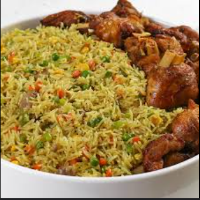
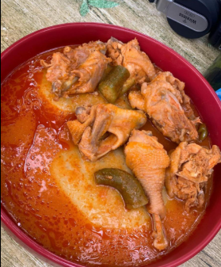
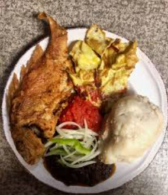
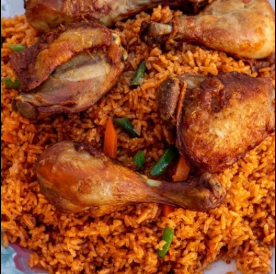

My Favorite Meals
1. Fried Rice
Main Ingredients:
- Rice
- Vegetables (carrots, peas, bell peppers)
- Soy sauce
- Chicken or shrimp
- Onion and garlic
- Cooking oil
Preparation:
Cook rice and set aside. Stir-fry onions, garlic, and vegetables in oil. Add chicken or shrimp and cook thoroughly. Mix in rice and soy sauce, stir well until everything is heated through and evenly coated.

2. Banku
Main Ingredients:
- Corn dough
- Cassava dough
- Water
- Salt
Preparation:
Mix corn and cassava dough with water and salt. Cook over medium heat while stirring continuously until smooth and stretchy. Serve hot with soup or stew.

3. Fufu
Main Ingredients:
- Yam, cassava, or plantain
- Water
Preparation:
Boil yam, cassava, or plantain until soft. Pound or blend until smooth and stretchy. Shape into balls and serve with soup or stew.

4. Kenkey
Main Ingredients:
- Fermented corn dough
- Water
- Salt
- Maize husks (for wrapping)
Preparation:
Mix fermented corn dough with water and salt. Wrap dough in maize husks and boil for several hours. Serve with soup, stew, or fried fish.

5. Jollof Rice
Main Ingredients:
- Rice
- Tomatoes, tomato paste
- Onions and garlic
- Bell peppers
- Vegetable oil
- Seasoning and spices
- Chicken, beef, or fish (optional)
Preparation:
Blend tomatoes, onions, and peppers. Fry the mixture in oil, add spices and meat (if using). Add rice and water, cook until rice is tender and absorbs the sauce. Stir occasionally to prevent burning.
